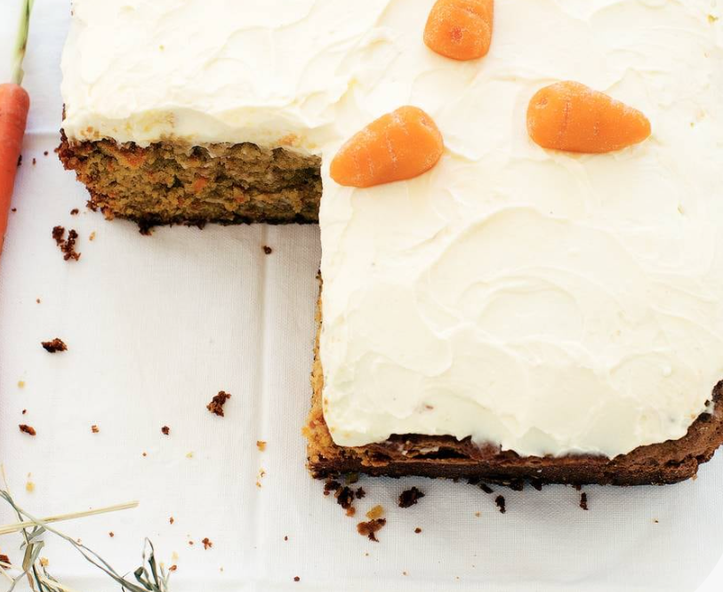

Navigatie
Hoofdpagina
Appeltaart

| Hoeveelheid |
Ingrediënt |
| 1 |
Middelgroot scharrelei |
| 1 |
Citroen |
| 400 gram |
Zelfrijzend bakmeel |
| 250 gram |
Witte basterdsuiker |
| 1 mespunt |
Zout |
| 250 gram |
Ongezouten roomboter |
| 8 |
Goudrenet-appels |
| 2 tl |
Kaneel |
| 150 gram |
Amandelspijs |
| 2 el |
Abrikozenjam |
- Verwarm de oven voor op 150 ºC. Boen de sinaasappels schoon, rasp de oranje schil en pers 1 vrucht uit. Maal de hazelnoten fijn in de keukenmachine en doe ze samen met de sinaasappelrasp, kaneel, olie, basterdsuiker en eieren in een kom.
- Schep voorzichtig de bloem en het bakpoeder erdoor. Rasp de peen op een fijne rasp en voeg toe.
- Schep het beslag in de ingevette brownievorm en bak de taart ca. 1 uur in het midden van de oven. Komt deze er schoon uit, dan is de cake gaar. Neem uit de oven en laat in de vorm in 1 uur afkoelen tot kamertemperatuur.
- Meng de zuivelspread met de poedersuiker en 2 el sinaasappelsap (per taart) in een kom. Bestrijk de taart ermee.